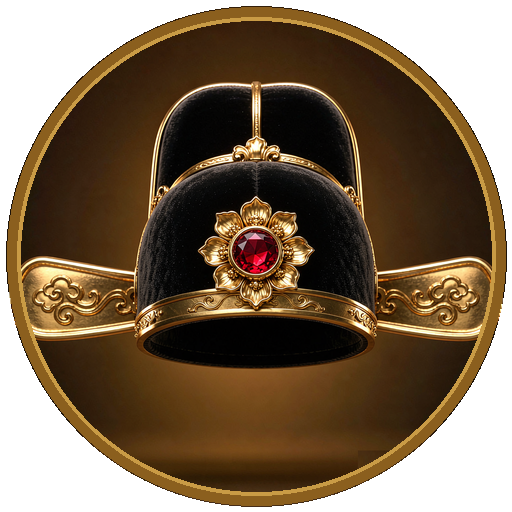

登科录 · 古代科举一次看透
以本地 DeepSeek 档案（687 个对话、140 个科举相关）为底稿，联合权威网络资料交叉核实重构。按「总览 → 闯关 → 文体 → 防弊 → 待遇 → 仪式 → 荣誉」七层递进展开，分支间以 ↗ 交叉引用 标注关联。
一 · 千年科举总览先见森林，再看树木
1.1制度沿革：605 — 1905，整整 1300 年
587 年隋文帝废九品中正制，605 年隋朝开始分科考试选官；至清光绪三十一年（1905）废止。因坚持"自由报名、公开考试、平等竞争、择优取士"，为寒门子弟提供了上升通道。明清两代是本知识体系的叙述坐标。
1.2体系全景：一张图看懂六级与五重身份
读书人的身份序列是本体系的"主轴"：白丁 → 童生 → 秀才（生员）→ 举人 → 贡士 → 进士。每次跨越都对应一场考试、一个头名称谓、一组新特权——这正是第二章到第五章的展开顺序。
二 · 六级闯关之路主轴：每过一关，换一个身份
2.1童试三关：入门之路（县试 → 府试 → 院试）
童试是资格赛而非"正式科举"——通过后才取得生员（秀才）身份，方有参加正式三级考试（乡会殿）的入场券。应试者不论年龄皆称童生，故有"白首童生"之说。
| 县试 | 府试 | 院试 | |
|---|---|---|---|
| 主考 | 本县知县 | 知府（直隶州知州） | 各省提督学政（中央钦派） |
| 时间 | 农历二月（也有正月） | 四月 | 三年两次（岁考·科考） |
| 场数 | 通常四至五场，首场为正场 | 一至二场 | 两场：正试＋复试 |
| 头名 | 县案首 | 府案首 | 院案首 |
| 通关奖励 | 取得府试资格 | 取得院试资格 | 生员（秀才）身份，入府州县学 |
2.2乡试 · 秋闱：命运的分水岭
逢子、卯、午、酉年的八月，在各省省城贡院举行，故称"秋闱""秋试"，又称"大比"。主考由皇帝钦派翰林、内阁学士充任。遇朝廷庆典可加开恩科。考中者称举人（俗称孝廉），从平民跃升为"老爷"——这是整个科举中含金量最高的一次身份跨越（待遇详见 ↗ 5.2 举人）。
| 场次 | 日期 | 考试内容（清乾隆五十二年定制） |
|---|---|---|
| 第一场 | 八月初九 | 四书文三篇（《论语》《中庸》《孟子》各一，每篇 700 字以上）＋ 五言八韵试帖诗一首 |
| 第二场 | 八月十二 | 五经文五篇（《易》《书》《诗》《春秋》《礼记》各一） |
| 第三场 | 八月十五 | 经史时务策五道（结合经学议论时政） |
每场提前一日进场、考毕次日出场，合计九天七夜，吃喝拉撒睡全在号舍（详见 ↗ 2.6）。
乡试榜上的名次称谓
| 名次 | 称谓 |
|---|---|
| 第一名 | 解元（唐伯虎乡试第一，故称"唐解元"） |
| 第二名 | 亚元 |
| 第三、四、五名 | 经魁（填榜时最后倒写前五名，称"五经魁"，唱名特响，曰"闹五魁"） |
| 第六名 | 亚魁 |
| 其余 | 文魁；另每正榜五名取副榜一名（副贡） |
新科举人由国家颁给 20 两牌坊银和顶戴衣帽匾额，匾额悬于宅门，门前可立牌坊——"光宗耀祖"的实物化。
2.3会试 · 春闱：决定性一考
乡试次年（丑、辰、未、戌年）春季，由礼部在京城贡院主持，故又称"礼闱""春闱"。各省举人及国子监监生皆可应考，同样连考三场、每场三天。主考官称总裁（座主/座师），同考官人数比乡试多一倍。
录取者称贡士（俗称出贡，别称明经），第一名称会元。录取约三百名，名额按南北分卷制度分配——明代仁宗朝定"南六十、北四十"，此后沿用至科举废止。
2.4殿试 · 金榜：天子门生
会试当年（明成化八年起定于三月十五，清代多在四月）举行，皇帝亲自主持，只考时务策一道、为期一天。不淘汰，只排名次——能走进殿试的贡士，通常都已是进士。
| 甲第 | 名额 | 赐号 | 称谓 |
|---|---|---|---|
| 一甲 | 仅 3 名 | 进士及第 | 状元（鼎元）、榜眼、探花，合称"三鼎甲" |
| 二甲 | 若干 | 进士出身 | 其中第一名称传胪 |
| 三甲 | 若干 | 同进士出身 | 其中第一名称亦称传胪 |
榜用黄纸书写，故称"黄甲""金榜"——"金榜题名"由此而来。次日读卷，又次日放榜。
进士的出路
状元授翰林院修撰，榜眼、探花授编修；其余进士经朝考，优者入翰林院为庶吉士（三年散馆考试合格授编修、检讨），形成"非进士不入翰林，非翰林不入内阁"的格局；其余可任六部主事、御史，愿当知县者榜下即用，不必候补，号称"老虎班"。
2.5三年一卡点：干支周期的巧妙衔接
科举"三年一大比"最精妙处在于：秋闱中举，刚好赶上次年春天的春闱。全部卡在地支循环上——
岁试 / 科试之辨：院试三年两次。岁试逢丑辰未戌年，取"岁"字——学政对在学生员的例行考课，兼收童生进学；科试逢寅巳申亥年，取"科"字——为科举选送人才，生员考列一、二等即"录科"、取得赴闱资格，故安排在乡试前一年。
县试（二月）· 府试（四月）：连年不断，岁岁开考，不占大年格。
恩科：逢登极、万寿、大婚等庆典额外加开，不循三年干支之期。
考试时间链条：县试（二月）→ 府试（四月）→ 院试（多在五六月间，由学政巡回各府主持、悬牌定日，各地不一，必在府试之后）→ 乡试（次年八月初八入场）→ 会试（又次年三月初九、十二、十五）→ 殿试（同年四月廿一）。时间环环相扣，进学之后绝不会"来不及"赶下一场。
改期与例外：会试明初定二月，乾隆九年（1744）以二月苦寒、防怀挟之弊改为三月，此后遂为定制；乡试法定八月，遇重大天灾、战乱、国丧偶有延至九、十月者（如嘉庆六年顺天延九月、道光二十三年河南延十月），同治三年江南甚至出现过十一月"冬闱"——均为特例，不改"秋闱"之名。
彩蛋：2026 丙午，正是乡试之年。实例：1894 甲午（鼠）乡试 → 1895 乙未（牛）会试殿试，康有为、梁启超即赶乙未科春闱。
假设某学童在寅虎年投身科考：当年二月参加县试、四月参加府试、随后通过院试（科试，约五六月，学政巡回定日），一年三考全部过关，进学为生员（秀才）；翌年卯兔年八月赴秋闱乡试，顺利中举；第三年辰龙年三月赴京师会试中式成贡士，再经四月殿试金榜题名为进士。
理论上，从学童到进士，最快只需三年——前提是关关一次过。现实中凤毛麟角，故有"白首童生""五十少进士"之叹。
进学为秀才
贡士（会元）→ 进士（状元）
2.6考场九天七夜实录
号舍：仅有上下两块木板——上板为桌、下板为凳，夜里两板一拼便是床。炭火一盆（取暖兼做饭）、蜡烛一枝，与外界完全隔绝。贡院大门关闭，考期未完不得离开。
吃喝：自备考篮干粮入场（届时要被兵丁掰碎检查有无夹带，↗ 4.4），监考官只管作弊，不管考生生活。每场最后一晚是唯一能出号舍、找客栈踏实睡一觉的机会。
三 · 考什么：文体与内容三场文体演变 · 八股解剖 · 策问
从唐宋到明清，考试内容一路演变
| 朝代 | 考试内容 |
|---|---|
| 唐 | 进士科初试时务策，高宗加帖经、杂文；玄宗天宝起杂文专用诗赋（"诗赋取士"） |
| 宋 | 初承唐制试诗赋论策；熙宁四年（1071）王安石改试经义、论、策 |
| 明清 | 三场制：四书义 → 五经义 → 策论（以四书取士为主），乾隆五十二年（1787）成定制 |
| 1901改制 | 改中国政治史事论、各国政治艺学策——仅行三年即随科举废止 |
八股文：格式极死，却考了五百年
八股文又称制义、制艺、时文、四书文：以四书五经文句命题，只许"代圣贤立言"，用古人语气阐述义理；结构有一定程式——破题两句 → 承题 → 起讲 → 起股、中股、后股、束股（四股中各有两股排偶对仗，合称八股），字数句法皆有严格限制。明清乡会试头场考八股文，能否考中主要取决于头场八股优劣，故读书人毕生精力多耗于此。
殿试策问：皇帝亲自出题
殿试只考时务策一道，由皇帝出题。真实例题：
| 年份 | 策问题目 |
|---|---|
| 宣德五年（1430） | "用人何以得其力论" |
| 崇祯七年（1634） | "士习不端，欲速见小……兹欲正士习以复古道，何术而可？……今欲灭敌恢疆，何策而效？……但欲恤民，又欲赡军，何道可能两济？" |
| 康熙五十七年（1718） | 江南乡试首题"举贤才焉知贤才而举之"、次题"大哉圣人之道" |
💡 出题是难事：录得英才，主考官声名鹊起；出得不好则被天下耻笑——万历年间冯梦祯与李廷机的"拟程之争"即源于此。
四 · 防弊体系：保结制度没有照片的时代如何验明正身
4.1问题：一场没有照片的百万人大考
古代无照相、无指纹库、无学籍系统，冒名顶替却要防 1300 年。科举的答案是三条线：① 考前——保结连坐（信用背书 + 利益捆绑）；② 入场——唱保核验（声纹 + 相貌 + 行为三重验证）；③ 考后——弥封誊录（切断考官与考生的联系）。准考证为"浮票 + 保单"双件套：浮票记体貌特征（面白无须、身长五尺等），保单由保人担保身家清白。
4.2保人资格：只有"廪生"可做保
核心保人必须是廪生（廪膳生员，lǐn shēng）——生员三等中的最高一级，享受国家廪米廪银。"廪"字本义官家粮仓（甲骨文象形谷垛入屋宇），以禄养换信用，即"食禄者担责"。
| 生员等级 | 待遇 | 担保权 |
|---|---|---|
| 廪膳生员（廪生） | 月领廪米六斗、银一两；名额极严（府学40、州学30、县学20） | ✅ 唯一可签保单者 |
| 增广生员（增生） | 无廪禄，廪生缺额时递补 | ❌ |
| 附学生员（附生） | 初入学最低等级 | ❌（《儒林外史》周进屡遭羞辱即因只是附生） |
演进：宋创"伍保连坐"（里甲长本地担保）→ 明中叶行"认保制"（考生自寻本县廪生，随行赴省）→ 乾隆朝改"派保制"（官府随机指派陌生廪生，切断利益链）→ 认保 + 派保双保并行。
4.3做保的待遇与风险：一份高危"副业"
| 维度 | 内容 |
|---|---|
| 保结银 | 童试 0.5–1 两/人 · 院试 1.5–2 两/人 · 乡试 2–3 两/人 · 会试 5 两/人；预付定金、考后付尾款 |
| 灰色空间 | 冷籍或富家子弟参考须重金求廪生作保（"贽敬"）；加急换保翻倍；乾隆朝扬州曾查获垄断担保的"保结牙行" |
| 规模上限 | 一名廪生最多保 30 人（偏远可 50）；职业保人年收入可达 200 两，远超廪膳正俸（年 4 两） |
| 连坐风险 | 考生冒籍/作弊 → 保人同罪：雍正朝福建一案集体革除 32 名廪生功名；流放宁古塔亦有之 |
| 地域限制 | 本府异县可（需学官许可）· 本省异府❌ · 跨省绝对❌；会试例外可用在京同乡官员替代 |
💡 保结制度本质：朝廷把身份核验成本"外包"给底层士人，用信用套现与连坐威慑，在没有身份技术的时代支撑起百万人大考——同时也榨取了廪生的剩余价值。
4.4做保流程：从互结到唱保
第一步 · 考前：多重结保
考生五人"互结"（一人作弊五人连坐）、四邻"共结"，再由本县廪生"认保"签保单、官府指派"派保"复核。保单须载明姓名、籍贯、年龄、体貌、三代履历。
第二步 · 赴省：保人随行
清制："保结廪生未至，纵有浮票亦禁入辕门"。乡试保人必须亲赴省城贡院；会试在京，边远考生可由在京同乡官员替代，但基础保单仍须本县廪生出具。常有保人率数十考生"团体远征"，雇骡车摊薄路费。
第三步 · 入场：辕门初验 → 唱保 → 搜检
| 环节 | 动作 | 防什么 |
|---|---|---|
| ① 辕门初验 | 差役按名册喝问姓名籍贯，保人递保单画押 | 冒名入闱 |
| ② 唱保 | 考生高声自报"某生蒙某廪生保结"，保人当场高声应答 | 替考（声纹+相貌+行为） |
| ③ 脱衣搜身 | 解发除袜、掰碎干粮查夹带 | 夹带小抄 |
嘉靖《南闱纪事》："唱保声里，枪手股栗不能应。"《南国贤书》载有保人因病未到、考生虽证件齐全仍被拒入场的案例。明代更有江西考生冒充顺天府籍应试、事发三代禁考的重案——对照 ↗ 2.3 的南北分卷，冒籍动的是"录取率"，故为时空双重防线（冒籍防地域作弊、匿丧防伦理作弊：丁忧 27 个月内隐丧应试属悖逆重罪）。
第四步 · 考后：弥封誊录磨勘（与保结互补的第二道防线）
考生墨笔作答为墨卷，交卷后弥封官糊名，编号交誊录生用朱砂誊为朱卷，对读生校对后分送内帘——考官只见朱卷不见笔迹姓名。放榜后调取墨卷核对红号当众开封；落卷也要加批语发还考生；中式举人另须磨勘、复试。
4.5说辞模板 + 唐伯虎唱保模拟
标准唱保套语（法定宣誓用语，核心四忌：冒籍·匿丧·顶替·捏造）：
保人（二人同时高声）："廪生×××，保得○○○是实！"
下面是本地档案中还原的场景剧本——弘治十一年（1498）八月初八卯时，南京江南贡院辕门外，数千考生喧哗、铜锣与"肃静！"声里：
五 · 功名与待遇每一级身份值多少钱
5.1秀才：脱离平民，但尚不能做官
生员特权：免赋役差役、见官不跪、戴方巾着长靴、遇公事可票见知县、诉讼免刑。但秀才没有做官资格，只有继续考或入国子监读书的资格——秀才与举人之间，隔着一道"中举"的阶层天堑。
5.2举人：一次跨越，三重跃迁
| 维度 | 内容 |
|---|---|
| 身份 | 跃升"举人老爷"，入乡绅阶层；匾额、牌坊、20 两牌坊银；婚姻市场"潜力股" |
| 法律 | 见官不跪、不过堂、不用刑；刑事须先革功名方可动刑（杨乃武案即为先例） |
| 仕途 | 具备做官资格：可经"大挑"直接补缺任知县、教谕、县丞——会试不中也保底有官做（海瑞即举人出身） |
| 经济 | 免田赋约 200 亩、免 10 人徭役（名额可出让获利）；乡绅"投献"田产；会试官府给路费 |
5.3进士：金字塔的顶端
一甲三人直授翰林（修撰/编修）；二甲三甲经朝考分流入翰林（庶吉士）、六部、御史、知县（榜下即用"老虎班"）。翰林三年散馆后升迁极快，明清形成"非进士不入翰林，非翰林不入内阁"的宰相养成路径。
5.4经济账：米价折算古今对比
换算基准（双源）：明清 1 两 ≈ 37.3 克银 × 6.5 元/克 ≈ 240 元；按康乾米价 1 石（60 公斤）≈ 1 两，今米价 5.5 元/公斤折算 ≈ 330 元/两。综合取清代中后期 1 两 ≈ 200–300 元。
关键认知：举人没有"死工资"（"月俸三十两"系误解，举人非实职官员不领俸禄），其收入是"制度性套利"——免税特权变现（核心，上不封顶）+ 书院山长教学（80–200 两/年）+ 润笔作保馈赠（50–300 两/年）。而秀才层的廪生年入仅够"普通职员月薪"，可见中举才是真正的阶层天堑。
六 · 榜单与仪式考完只是开始，风光在榜与宴
6.1三大放榜：桂榜 → 杏榜 → 金榜
填榜也有仪式感：乡试榜从第六名写起，末名写完再倒写前五名（"五经魁"），填至深夜、燃巨红花烛，经魁出自哪一房官即置红烛一对于其案前；经魁唱名声音特高，称"闹五魁"。清人多选寅、辰日放榜——取"龙虎榜"之意。
6.2宴礼与题名碑
| 仪式 | 内容 |
|---|---|
| 鹿鸣宴 | 乡试放榜次日，巡抚衙门设宴，主考、帘官与新科举人共宴，奏《诗经·鹿鸣》之章、作魁星舞 |
| 恩荣宴 | 殿试后的进士宴；唐代称"曲江宴"、宋代称"琼林宴/闻喜宴" |
| 题名碑 | 刻碑题名立于北京孔庙：现存元代三座、明代七十七座、清代一百一十二科进士题名碑 |
| 唱名赐第 | 皇宫大殿举行，隆重异常——"天子门生"的点将台 |
七 · 荣誉之巅三元 · 六元 · 状元地理
7.1三元及第：1300 年仅 14 人
一身兼解元、会元、状元即"连中三元"（大三元）。历代共 14 人：唐代 2（张又新、崔元翰）、宋代 6（孙何、王曾、宋庠、杨寘、王若叟、冯京）、金 1（孟宗献）、元 1（王崇哲）、明 2（黄观、商辂）、清 2（钱棨、陈继昌）。
7.2六元及第：史上仅 2 人的"超级学霸"
若把童试三关的案首也算上——县、府、院、乡、会、殿六级全第一，称"六元及第"，1300 年间仅两人：明代黄观（安徽池州）与清代钱棨（苏州）。乾隆为钱棨题《三元诗》，苏州建"三元坊"——即今人民路三元坊地名由来。网络流传"六元及第唯二人"之说与本馆本地档案一致，但黄观一级是否算"县案首"史料存争议，已标注存疑。
7.3状元地理：苏州现象
历代状元总数约 500–700 人（统计口径不一），江苏籍居全国第一：清代 114 名状元中江苏占 49 席，其中苏州 26 名，居全国府级第一——"状元之乡"由此得名。南京现存朱状元巷、秦状元巷、三元巷等遗迹；苏州归氏家族唐代不到 40 年连出两对兄弟状元、一对父子状元。
八 · 趣味冷知识体系之外的枝叶
🎩 "相公"与"员外"：称谓里的阶层
⏳ 丁忧为何是 27 个月而不是 36 个月
📜 "及第"二字的精确含义
🏛 "闱"字三义
🦊 落榜生也有一线生机：副榜与恩科
💰 举人为什么能"白得地"
九 · 名词速查辞典全文搜索可直接命中词条
- 案首
- 县试、府试、院试头名的通称；三场皆案首称"小三元"。
- 大挑
- 举人屡会试不中者，由朝廷挑选直接授官（知县、教谕等）的制度。
- 丁忧
- 父母（祖父母）丧期守制 27 个月，期间不得应试出仕；隐匿应试称"匿丧"，为重罪。
- 恩科
- 遇朝廷庆典加开的考试，正常三年一科之外的加试。
- 浮票
- 古代"准考证"的体貌登记页，记面白无须、身长五尺等，与保单合用核验身份。
- 廪生
- 廪膳生员，生员最高一等，月领廪米六斗、银一两，唯一有考生担保权者；"廪"本义粮仓。
- 鹿鸣宴
- 乡试放榜次日巡抚设宴，奏《鹿鸣》、作魁星舞，为新科举人庆功。
- 冒籍
- 冒充他州县籍贯应试（多流向录取率高的边远地区），事发革功名、保人同罪。
- 磨勘
- 乡试放榜后试卷调礼部复查的制度。
- 墨卷 / 朱卷
- 考生墨笔原卷为墨卷；糊名后由誊录生朱笔誊抄为朱卷送考官，防辨认笔迹。
- 闹五魁
- 乡试填榜倒写前五名时经魁唱名特响的仪式。
- 派保 / 认保
- 派保：官府随机指派陌生廪生担保（乾隆后）；认保：考生自寻本县廪生担保。双保并行。
- 唱保
- 入场点名时考生高声自报保人、保人当场高声应答确认的核验制度，"唱保声里，枪手股栗不能应"。
- 解元 / 亚元 / 经魁 / 亚魁
- 乡试第一 / 第二 / 三至五名 / 第六名的称谓。
- 杏榜 / 桂榜 / 金榜
- 会试 / 乡试 / 殿试放榜的别称，时值杏花、桂花，殿榜为黄纸故名金榜。
- 三鼎甲
- 殿试一甲三名：状元、榜眼、探花的合称。
- 传胪
- 二甲、三甲第一名的称谓（一甲第一名则称状元/鼎元）。
- 座主 / 总裁
- 会试主考官的称谓，中式者对其执门生礼。
- 老虎班
- 进士愿任知县者"榜下即用"不必候补，号称老虎班。
- 庶吉士
- 新进士中朝考优秀者入翰林院进修，三年后散馆考试合格授编修、检讨，升迁极快。
附录 · 资料来源与可信度说明
三类来源与标注规则
| 标记 | 来源类型 | 示例 |
|---|---|---|
| ✓ 已核实 | 权威网络来源，多源交叉印证 | 故宫博物院、中国第一历史档案馆、人民网、宁波市北仑区政府、北京东城区图书馆、交汇点新闻、鹤壁日报、Wikiwand |
| ◆ 本地档案 | DeepSeek 历史对话（140 个科举相关对话，精读 6 个核心） | 《六级升级之路》《准考证及保举制度》《中举待遇》《唐伯虎唱保模拟》等 |
| △ 存疑 | 孤证或学术有争议 | 黄观"六元及第"细节；本地档案中的银两收入数字（为推算值） |
核实与存疑清单
| 内容 | 结论 |
|---|---|
| 六级考试框架、干支年份、三场日期与文体 | ✓ 本地档案与故宫/一史馆完全一致，可信度高 |
| 各级头名称谓（案首/解元/会元/状元…） | ✓ 多源一致；补充了本地档案缺失的"亚元/经魁/亚魁/传胪" |
| 保结唱保流程 | 框架✓（与制度史吻合）；保结银数额、保人上限为本地档案观点，未见权威出处，置信度中 |
| 米价折算（1 两≈200–300 元） | △ 方法合理（白银市价法+米价购买力法互证），但银价米价逐年波动，数字应视为量级参考 |
| 唐伯虎唱保剧本 | ○ 文学演绎：史实框架（1498 应天乡试、中解元、次年科场案）已核实，对白与"周臣作保"为虚构 |